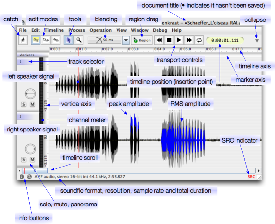

this tutorial tries to introduce you to the notion behind what is commonly referred to as a sound editor. when you work with sound in the digital domain (which currently is the dominating domain), you will usually end up with a list of applications that serve different purposes. eisenkraut is intended for capturing, editing and processing of sounds on a very direct level. it is not a replacement for multitrack recorders.
digitally captured sound is stored in a file, an audio file or sound file, which is tagged by its "format" i.e. the structure used to represent sound. the sound file formats are known by acronyms, like AIFF which is short for apple audio interleaved file format, or RIFF/WAVE. an AIFF or WAVE file describes a captured portion of sound stored on a medium such as your harddisk. AIFF or WAVE differ in the way the sound "meta-information" (such as the length of the recording, the number of channels, the quality) is encoded. generally speaking, these formats are interchangable. there are pro ands cons about which format to use, but all modern formats are socalled container formats, they don't necessarily say something about the quality of the recording. for example, you can use both AIFF, WAVE, or AU or IRCAM to store sound in 16 bits, 24 bits, and so on.
to open an existing sound file, choose File->Open and select the file in the dialog that appears. if you have a multichannel sound that is represented as separate files per channel, you need to use File->Open Multiple Mono and select all belonging files in the successive dialog.
capturing describes the process of recording sounds, usually by picking them up with an electro-acoustic converter (a microphone), or by dubbing them from other electronic media such as tape. to perform this task...
where there is no laws as how and in which order to work with sound, in common practise one of the first steps after capturing your sound, is to do a coarse cutting and correcting of your sound. that's typically the task of a sound editor. a sound editor can read a sound file, such as a recording you've made, and let you cut out parts that aren't meant to be used in a composition, to remove errorneous clicks, to alter the volume balance in your recording, or to do transformation of certain portions of that sound.
to manipulate a chunk of sound you make a selection with the pointer tool of the document window. the selection is shown with blue shading. if you want to manipulate a particular channel of the soundfile, you will need to unselect the channels that should not be edited (by default all channels are selected). to do so, shift+click on the channels name (the channel number on the left side of the document window). the channel name will turn from blue to grey and also the waveform selection for this channel will become grey. this is usefull if you want to apply different gain to each channel.
to finally arrange and organize sound, you will typically use a multi-track recording software such as ardour or protools, which handles sound files in a very general way. these programs are not intended to do fine adjustment of the sound recordings, they presume you have done these adjumentment already in a sound editor. a multi-track recording program rather deals with the composition of different noise and sound layers on a large scale time axis, whereas the sound editor focusses more on the small scale correction and preparation of basic material
having said these preliminaries, a sound editor such as eisenkraut is meant to prepare material. however, no software requires a particular use, it suggests some ways of using it, but they do not forbid to use them in other ways. i've seen people playing live electronic concerts, just dragging and dropping sound bits in wavelab - the software is not designed for this particular purpose, but it's possible to use it that way. so, while this tutorial describes the typical way of using it, there is nothing wrong with using it a different way!
(i'm using the term audio editor here because it encompasses both noise and sound, two categories of acoustic phenomena which are perceptually different). an audio editor let's you load and edit (modify) a piece of recorded sound as stored in a audio file. eisenkraut can deal with the most common audio file formats AIFF, WAVE, snd/AU, IRCAM. while internally working with 32-bit floating point representation, it can open and edit any uncompressed format from 8 bits to 64 bits. Compression describes the means of shrinking the harddisk space a sound occupies, such as known from the MPEG Audio Layer 3 (mp3) compression. Eisenkraut cannot deal with compressed audio, so you would have to convert it to a normal AIFF file using iTunes or a similar program, prior to using it in Eisenkraut.
the common perspective of a sound editor is to present the sound as a physical change of pressure over time, that is to show you this change as an elongation plotted over a time axis. when sound is captured in a computer, it is converted from an acoustic signal (dynamically changing pressure) to an electrical signal (dynamically changing voltage, having the same "shape" hence being "analoguous"), and from an electric continuous (analogue) signal to a digital (sampled and quantisized) representation of that waveform. there are a lot of books about this issue, so i'm very brief here. for now, just imagine the air pressure increasing linearly over a few milliseconds. to represent this changing air pressure in the digital domain, the ADC (analogue-to-digital converter) will take samples (probes) of the air pressure or voltage oscillation at a constant rate, say 44100 times per second. so to describe a pressure change over one second, you can store 44100 probes of the pressure at equally spaced time points. that's essentially a digital, or more precisely a discrete (sampled) signal. that's what your sound card does for you. this sampling is accurate as long as the sound you want to represent contains frequencies (periodic elements) just below half of the sampling frequency, i.e. below 22050 cycles per second. since the human ear, depending on its health and your age, can only perceive frequencies up to around 20 khz, everything is fine with sampling a sound at two times 20 kilohertz (for example 44.1 khz which is called CD-quality).
besides the sampling rate (frequency), the second essential point about sound storage is its bit depth: a computer has a limited precision as to represent a value of pressure. imagine a pressure of 1/3 pascal (or 80.5 decibels SPL): this value expressed as a decimal is 0.3333333333333333333... and so on pascal. the computer has to truncate the value to a fixed number of decimal points, this is called digitization or quantization, which is expressed in the number of bits used for each probe (sample). the more bits you use, the less error or bias you will introduce to the discrepancy between the quantisized and the "real" signal. 16-bit which is known as CD-Audio quality, means, each pressure probe can be represented by 65 thousand different values, equivalent to a signal-to-noise ratio of around 90 decibels. you do not need to worry about these values, you should only know that sound can be represented by 16, 24 and 32 bit resolution values, corresponding to a newly introduced digital noise of around -90, -138 or -186 decibels. the human ear has a dynamic range of about 130 to 140 decibels, so there is hardly need to go beyond 24bit. only note that when you start to transform your sounds a couple of times, due to rounding numbers to the chosen precision, additional digital noise might be introduced and come into an audible range. also note that a 24-bit sound file will take up 3/2 of the size of the same sound represented as a 16-bit file, while a 32-bit file is twice as big as a 16-bit file. a 16-bit file requires around 5 megabytes of space per channel and per minute at the common sampling rate of 44.1 khz.
When dealing which a spatial sound situation, the common way to (re)produce space, is to record sound in parallel at slightly different locations. When picking up sound at just one spot, that will be a mono (or single channel) recording. Often, you will have access to a stereo microphone which will pick up the sound at two slightly separated spots in a space. There is good knowledge about how to reproduce a stereo recording on two or more speakers as to re-create the illusion of the original space. In recent years, people started to recorded with more channels, typically between five and sixteen. That is, the sound information is captured for five to sixteen different spatial spots. While we only have two ears to create a spatial image of the sound, when reproducing sound on loudspeakers, it can be way more convincing to do it with more than two (stereo) speakers, say eight or sixteen speakers. The number of independant but synchronous recording sources is called the number of channels. While from a human / psycho-acoustic perspective it would be much easier if the sound per se and its spatial information was represented separately, traditionally a sound editor will show you the different channels of a sound recording, simply because psychoacoustics are complicated to deal with in software and programmers are lazy. but don't worry, you will adapt to "seeing" the same sound eight times in a similar manner.
Multiple channels can be stored either in different sound files (which is for example the case when working with protools: you have one sound file for the left channel, one sound file for the center speaker and so on), or they can be stored in just one sound file, using a process called interleaving (grouping the channel information together). Eisenkraut can handle both multiple-mono files as well as compound interleaved files. Performance-wise interleaved files are preferable due to less action of the harddisk head moving around.
since noise or sound is a highly complicated and also highly inter-subjectively changing subject, there is no "right" way of representing it graphically, there is only a traditional way, which is more linked to the facilities of standard computers than perceptual preferences of the human ear. the traditional way of audio representation is to plot its dynamic pressure function over a time axis. There is a vast amount of literature about the pros and cons of viewing a time domain waveform of a sound. To be brief, the elongation or pressure samples will say little about the perceptual quality of the acoustic phenomenon of hearing the sound, when presented to a novice user. From a perceptual point of view, it may be way more adequate to present a sonagramme to the user, for example. However, once you get used to waveform displays, you will begin to recognize a lot of indicators for sound qualities just from looking at the waveform. Simply looking at the waveform and comparing it with the acoustic quality instantly yields a correlation between the amplitude (the vertical extent) of the waveform and the perceived volume or loudness, the relationship being far from linear however. After a while you will be able to clearly identify sections or sound quality changes from the way the waveform looks, you will even be able to get some clue about the frequency characteristics of a sound by looking at the relationship between the peak (local maximum) amplitudes of a sound and its energy (aka root-mean-square).
therefore, when you open a sound with an editor such as eisenkraut, by default what is presented to you is the motion of air molecules over time (note that there is an experimental sonagramme view though). since what we actually hear is the motion, that is difference of position of the molecules, we essentially hear the movement of molecules around their "normal" position (a sound wave transports acoustic energy, but the air molecules practically stay at the same place). we do not hear the static atmospheric pressure of one thousand hectopascal which is present everywhere on the ground. a sound wave representation therefore shows the movement of molecules around their normal position which is the "zero line" or null linie (german speak). the further the molecules move away from the normal position, the greater the amplitude, and, generally speaking, the louder the sound. once more, a digital system is limited, by suggesting an arbitrary maximum elongation called "zero decibals digital fullscale" (0 dB FS), equivalent to the relative value of -1.0 or +1.0. an audio editor therefore shows you the amplitude changes of the waveform in the range of -1 to +1. if you try to play back sound whose amplitude exceeds these -1/+1 limits, it will get distorted because the DAC (digital-to-analogue converter) of your sound card cannot represent air pressure samples greater than the maximum amplitude of 0 dB FS.
Somewhere above we mentioned that typically a sound is represented by 44 thousand probes of its air pressure movement per second. now modern computer screens have a resolution of around 1000 to 1600 pixels (dots) in its entire width. if you wish to view one second of sound on one computer screen, you would have to sqeeze around thirty sound samples into one screen pixel. this squeezing even becomes more intense if you wish to represent longer durations, say a minute or an hour of sound on one screen page. the solution is take an average of all pressure samples in a given time window to present just the average value of sound on a screen pixel. eisenkraut will show you a grayscale picture of the sound which has two shades: the darker grey shape corresponds to the sounds energy, also called root-mean-square. the second, lighter grey shape that has a greater vertical extends, is the peak amplitude of the sound, that is the maximum amplitude inside a small time window. imagine a sine wave which goes up and down 400 times a second. one characteristic of this sine wave is the maximum value the elongation can take, called the peak amplitude. this peak amplitude is displayed when viewing a large portion of sound in eisenkraut. to see the actual pressure movement, you can zoom in until you reach a resolution of one sound sample per one screen pixel. here's a screenshot:
if you open a multi-channel sound, say a stereo file, each channel of the file is displayed separately from top to bottom. the time axis on the top of the document's window shows you the resolution at which the sound is plotted, where the very beginning of the sound corresponds to time zero. by default, an amplitude of +1/-1 will touch the vertical bounds of the window, but it is possible to zoom in and out on the amplitude (vertical) axis (press Ctrl+Up and Down).
alternatively, you can choose View->Vertical Scale->Amplitude Logarithmic to show the amplitude in decibels. the noise floor is adjusted with Ctrl+Alt+Up and Down.